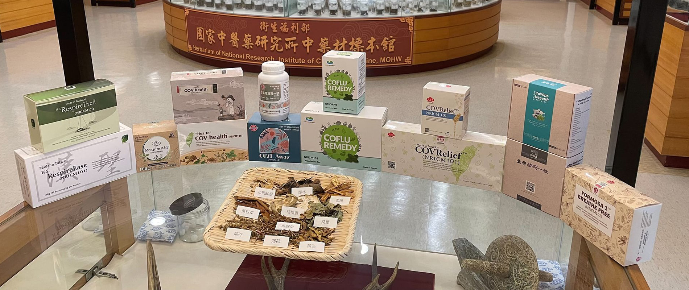

清冠一號資訊網
首頁
認識清冠一號
民眾Q&A
診所查詢

Previous
Next
衛福部covid19專區
清冠一號診所查詢表
認識清冠一號
清冠一號Q&A問答區
清冠一號相關公告
新冠肺炎相關新聞
2022-05-23
【置頂】「清冠一號動態表」公費清冠一號(供全台民眾查詢)
2021-05-27
【置頂】臺灣清冠一號民眾「Q&A問答區」
2023-01-21
【新聞】清冠一號對12種變種新冠病毒棘蛋白均有抑制ACE2結合作用
2022-09-28
【公告】臺灣清冠一號和清冠二號之安全性評估
2022-09-13
【公告】「臺灣清冠二號」僅適用缺氧重症患者，未經中醫師診療，切勿自行購買藥材煎煮，以免傷身!
更多相關公告
2023-02-13
【新聞】新增82例Omicron亞型變異株確定病例，分別為55例本土個案及27例境外移入
2023-02-13
【新聞】新增12,657例COVID-19確定病例，分別為12,397例本土個案及260例境外移入
2023-02-12
【新聞】新增17,199例COVID-19確定病例，分別為16,902例本土個案及297例境外移入
2023-02-11
【新聞】新增18,300例COVID-19確定病例，分別為18,000例本土個案及300例境外移入
2023-02-10
【新聞】指揮中心啟動走訪22縣市，交流討論COVID-19疫苗接種提升策略及地方防疫經驗回饋
更多相關新聞